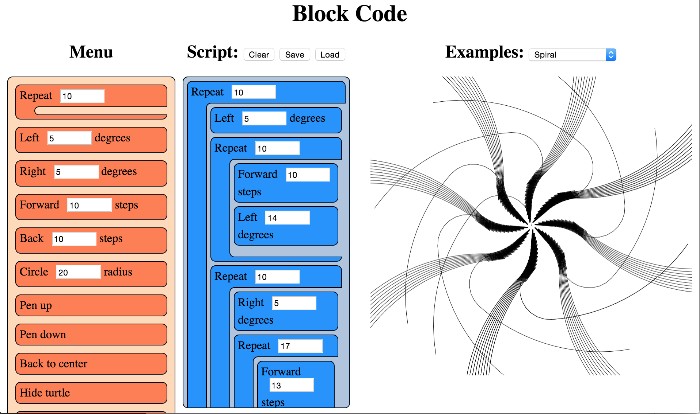
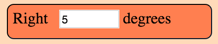
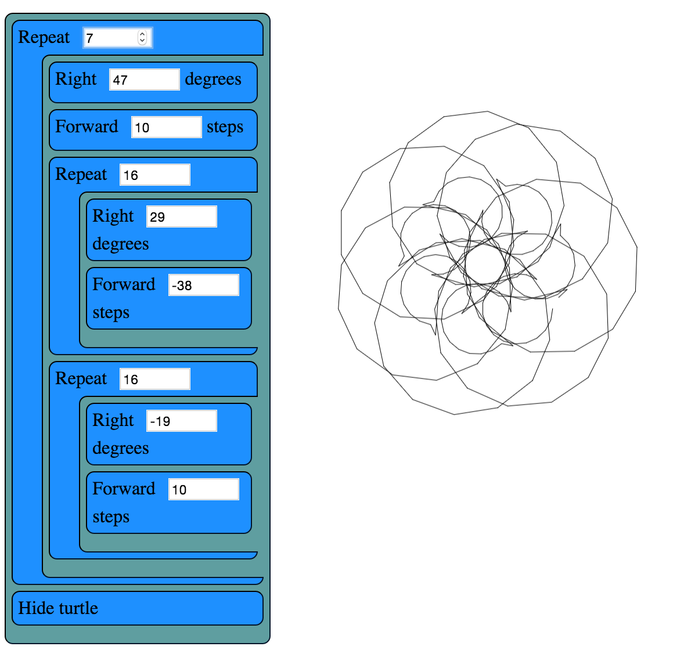

Blockcode: A visual programming toolkit
by Dethe Elza
Dethe is a geek dad, aesthetic programmer, mentor, and creator of the Waterbear visual programming tool. He co-hosts the Vancouver Maker Education Salons and wants to fill the world with robotic origami rabbits.
In block-based programming languages, you write programs by dragging and connecting blocks that represent parts of the program. Block-based languages differ from conventional programming languages, in which you type words and symbols.
Learning a programming language can be difficult because they are extremely sensitive to even the slightest of typos. Most programming languages are case-sensitive, have obscure syntax, and will refuse to run if you get so much as a semicolon in the wrong place—or worse, leave one out. Further, most programming languages in use today are based on English and their syntax cannot be localized.
In contrast, a well-done block language can eliminate syntax errors completely. You can still create a program which does the wrong thing, but you cannot create one with the wrong syntax: the blocks just won’t fit that way. Block languages are more discoverable: you can see all the constructs and libraries of the language right in the list of blocks. Further, blocks can be localized into any human language without changing the meaning of the programming language.

Block-based languages have a long history, with some of the prominent ones being Lego Mindstorms, Alice3D, StarLogo, and especially Scratch. There are several tools for block-based programming on the web as well: Blockly, AppInventor, Tynker, and many more.The code in this chapter is loosely based on the open-source project Waterbear, which is not a language but a tool for wrapping existing languages with a block-based syntax. Advantages of such a wrapper include the ones noted above: eliminating syntax errors, visual display of available components, ease of localization. Additionally, visual code can sometimes be easier to read and debug, and blocks can be used by pre-typing children. (We could even go further and put icons on the blocks, either in conjunction with the text names or instead of them, to allow pre-literate children to write programs, but we don’t go that far in this example.)
The choice of turtle graphics for this language goes back to the Logo language, which was created specifically to teach programming to children. Several of the block-based languages above include turtle graphics, and it is a small enough domain to be able to capture in a tightly constrained project such as this.
If you would like to get a feel for what a block-based-language is like, you can experiment with the program that is built in this chapter from author’s GitHub repository.
Goals and Structure
I want to accomplish a couple of things with this code. First and foremost, I want to implement a block language for turtle graphics, with which you can write code to create images through simple dragging-and-dropping of blocks, using as simple a structure of HTML, CSS, and JavaScript as possible. Second, but still important, I want to show how the blocks themselves can serve as a framework for other languages besides our mini turtle language.
To do this, we encapsulate everything that is specific to the turtle language into one file (turtle.js) that we can easily swap with another file. Nothing else should be specific to the turtle language; the rest should just be about handling the blocks (blocks.js and menu.js) or be generally useful web utilities (util.js, drag.js, file.js). That is the goal, although to maintain the small size of the project, some of those utilities are less general-purpose and more specific to their use with the blocks.
One thing that struck me when writing a block language was that the language is its own IDE. You can’t just code up blocks in your favourite text editor; the IDE has to be designed and developed in parallel with the block language. This has some pros and cons. On the plus side, everyone will use a consistent environment and there is no room for religious wars about what editor to use. On the downside, it can be a huge distraction from building the block language itself.
The Nature of Scripts
A Blockcode script, like a script in any language (whether block- or text-based), is a sequence of operations to be followed. In the case of Blockcode the script consists of HTML elements which are iterated over, and which are each associated with a particular JavaScript function which will be run when that block’s turn comes. Some blocks can contain (and are responsible for running) other blocks, and some blocks can contain numeric arguments which are passed to the functions.
In most (text-based) languages, a script goes through several stages: a lexer converts the text into recognized tokens, a parser organizes the tokens into an abstract syntax tree, then depending on the language the program may be compiled into machine code or fed into an interpreter. That’s a simplification; there can be more steps. For Blockcode, the layout of the blocks in the script area already represents our abstract syntax tree, so we don’t have to go through the lexing and parsing stages. We use the Visitor pattern to iterate over those blocks and call predefined JavaScript functions associated with each block to run the program.
There is nothing stopping us from adding additional stages to be more like a traditional language. Instead of simply calling associated JavaScript functions, we could replace turtle.js with a block language that emits byte codes for a different virtual machine, or even C++ code for a compiler. Block languages exist (as part of the Waterbear project) for generating Java robotics code, for programming Arduino, and for scripting Minecraft running on Raspberry Pi.
Web Applications
In order to make the tool available to the widest possible audience, it is web-native. It’s written in HTML, CSS, and JavaScript, so it should work in most browsers and platforms.
Modern web browsers are powerful platforms, with a rich set of tools for building great apps. If something about the implementation became too complex, I took that as a sign that I wasn’t doing it “the web way” and, where possible, tried to re-think how to better use the browser tools.
An important difference between web applications and traditional desktop or server applications is the lack of a main() or other entry point. There is no explicit run loop because that is already built into the browser and implicit on every web page. All our code will be parsed and executed on load, at which point we can register for events we are interested in for interacting with the user. After the first run, all further interaction with our code will be through callbacks we set up and register, whether we register those for events (like mouse movement), timeouts (fired with the periodicity we specify), or frame handlers (called for each screen redraw, generally 60 frames per second). The browser does not expose full-featured threads either (only shared-nothing web workers).
Stepping Through the Code
I’ve tried to follow some conventions and best practices throughout this project. Each JavaScript file is wrapped in a function to avoid leaking variables into the global environment. If it needs to expose variables to other files it will define a single global per file, based on the filename, with the exposed functions in it. This will be near the end of the file, followed by any event handlers set by that file, so you can always glance at the end of a file to see what events it handles and what functions it exposes.
The code style is procedural, not object-oriented or functional. We could do the same things in any of these paradigms, but that would require more setup code and wrappers to impose on what exists already for the DOM. Recent work on Custom Elements make it easier to work with the DOM in an OO way, and there has been a lot of great writing on Functional JavaScript, but either would require a bit of shoe-horning, so it felt simpler to keep it procedural.
There are eight source files in this project, but index.html and blocks.css are basic structure and style for the app and won’t be discussed. Two of the JavaScript files won’t be discussed in any detail either: util.js contains some helpers and serves as a bridge between different browser implementations—similar to a library like jQuery but in less than 50 lines of code. file.js is a similar utility used for loading and saving files and serializing scripts.
These are the remaining files:
block.jsis the abstract representation of a block-based language.drag.jsimplements the key interaction of the language: allowing the user to drag blocks from a list of available blocks (the “menu”) to assemble them into a program (the “script”).menu.jshas some helper code and is also responsible for actually running the user’s program.turtle.jsdefines the specifics of our block language (turtle graphics) and initializes its specific blocks. This is the file that would be replaced in order to create a different block language.
blocks.js
Each block consists of a few HTML elements, styled with CSS, with some JavaScript event handlers for dragging-and-dropping and modifying the input argument. The blocks.js file helps to create and manage these groupings of elements as single objects. When a type of block is added to the block menu, it is associated with a JavaScript function to implement the language, so each block in the script has to be able to find its associated function and call it when the script runs.

Blocks have two optional bits of structure. They can have a single numeric parameter (with a default value), and they can be a container for other blocks. These are hard limits to work with, but would be relaxed in a larger system. In Waterbear there are also expression blocks which can be passed in as parameters; multiple parameters of a variety of types are supported. Here in the land of tight constraints we’ll see what we can do with just one type of parameter.<!-- The HTML structure of a block -->
<div class="block" draggable="true" data-name="Right">
Right
<input type="number" value="5">
degrees
</div>
It’s important to note that there is no real distinction between blocks in the menu and blocks in the script. Dragging treats them slightly differently based on where they are being dragged from, and when we run a script it only looks at the blocks in the script area, but they are fundamentally the same structures, which means we can clone the blocks when dragging from the menu into the script.
The createBlock(name, value, contents) function returns a block as a DOM element populated with all internal elements, ready to insert into the document. This can be used to create blocks for the menu, or for restoring script blocks saved in files or localStorage. While it is flexible this way, it is built specifically for the Blockcode “language” and makes assumptions about it, so if there is a value it assumes the value represents a numeric argument and creates an input of type “number”. Since this is a limitation of the Blockcode, this is fine, but if we were to extend the blocks to support other types of arguments, or more than one argument, the code would have to change.
function createBlock(name, value, contents){
var item = elem('div',
{'class': 'block', draggable: true, 'data-name': name},
[name]
);
if (value !== undefined && value !== null){
item.appendChild(elem('input', {type: 'number', value: value}));
}
if (Array.isArray(contents)){
item.appendChild(
elem('div', {'class': 'container'}, contents.map(function(block){
return createBlock.apply(null, block);
})));
}else if (typeof contents === 'string'){
// Add units (degrees, etc.) specifier
item.appendChild(document.createTextNode(' ' + contents));
}
return item;
}
We have some utilities for handling blocks as DOM elements:
blockContents(block)retrieves the child blocks of a container block. It always returns a list if called on a container block, and always returns null on a simple blockblockValue(block)returns the numerical value of the input on a block if the block has an input field of type number, or null if there is no input element for the blockblockScript(block)will return a structure suitable for serializing with JSON, to save blocks in a form they can easily be restored fromrunBlocks(blocks)is a handler that runs each block in an array of blocks
function blockContents(block){
var container = block.querySelector('.container');
return container ? [].slice.call(container.children) : null;
}
function blockValue(block){
var input = block.querySelector('input');
return input ? Number(input.value) : null;
}
function blockUnits(block){
if (block.children.length > 1 &&
block.lastChild.nodeType === Node.TEXT_NODE &&
block.lastChild.textContent){
return block.lastChild.textContent.slice(1);
}
}
function blockScript(block){
var script = [block.dataset.name];
var value = blockValue(block);
if (value !== null){
script.push(blockValue(block));
}
var contents = blockContents(block);
var units = blockUnits(block);
if (contents){script.push(contents.map(blockScript));}
if (units){script.push(units);}
return script.filter(function(notNull){ return notNull !== null; });
}
function runBlocks(blocks){
blocks.forEach(function(block){ trigger('run', block); });
}
drag.js
The purpose of drag.js is to turn static blocks of HTML into a dynamic programming language by implementing interactions between the menu section of the view and the script section. The user builds their program by dragging blocks from the menu into the script, and the system runs the blocks in the script area.
We’re using HTML5 drag-and-drop; the specific JavaScript event handlers it requires are defined here. (For more information on using HTML5 drag-and-drop, see Eric Bidleman’s article.) While it is nice to have built-in support for drag-and-drop, it does have some oddities and some pretty major limitations, like not being implemented in any mobile browser at the time of this writing.
We define some variables at the top of the file. When we’re dragging, we’ll need to reference these from different stages of the dragging callback dance.
var dragTarget = null; // Block we're dragging
var dragType = null; // Are we dragging from the menu or from the script?
var scriptBlocks = []; // Blocks in the script, sorted by position
Depending on where the drag starts and ends, drop will have different effects:
- If dragging from script to menu, delete
dragTarget(remove block from script). - If dragging from script to script, move
dragTarget(move an existing script block). - If dragging from menu to script, copy
dragTarget(insert new block in script). - If dragging from menu to menu, do nothing.
During the dragStart(evt) handler we start tracking whether the block is being copied from the menu or moved from (or within) the script. We also grab a list of all the blocks in the script which are not being dragged, to use later. The evt.dataTransfer.setData call is used for dragging between the browser and other applications (or the desktop), which we’re not using, but have to call anyway to work around a bug.
function dragStart(evt){
if (!matches(evt.target, '.block')) return;
if (matches(evt.target, '.menu .block')){
dragType = 'menu';
}else{
dragType = 'script';
}
evt.target.classList.add('dragging');
dragTarget = evt.target;
scriptBlocks = [].slice.call(
document.querySelectorAll('.script .block:not(.dragging)'));
// For dragging to take place in Firefox, we have to set this, even if
// we don't use it
evt.dataTransfer.setData('text/html', evt.target.outerHTML);
if (matches(evt.target, '.menu .block')){
evt.dataTransfer.effectAllowed = 'copy';
}else{
evt.dataTransfer.effectAllowed = 'move';
}
}
While we are dragging, the dragenter, dragover, and dragout events give us opportunities to add visual cues by highlighting valid drop targets, etc. Of these, we only make use of dragover.
function dragOver(evt){
if (!matches(evt.target, '.menu, .menu *, .script, .script *, .content')) {
return;
}
// Necessary. Allows us to drop.
if (evt.preventDefault) { evt.preventDefault(); }
if (dragType === 'menu'){
// See the section on the DataTransfer object.
evt.dataTransfer.dropEffect = 'copy';
}else{
evt.dataTransfer.dropEffect = 'move';
}
return false;
}
When we release the mouse, we get a drop event. This is where the magic happens. We have to check where we dragged from (set back in dragStart) and where we have dragged to. Then we either copy the block, move the block, or delete the block as needed. We fire off some custom events using trigger() (defined in util.js) for our own use in the block logic, so we can refresh the script when it changes.
function drop(evt){
if (!matches(evt.target, '.menu, .menu *, .script, .script *')) return;
var dropTarget = closest(
evt.target, '.script .container, .script .block, .menu, .script');
var dropType = 'script';
if (matches(dropTarget, '.menu')){ dropType = 'menu'; }
// stops the browser from redirecting.
if (evt.stopPropagation) { evt.stopPropagation(); }
if (dragType === 'script' && dropType === 'menu'){
trigger('blockRemoved', dragTarget.parentElement, dragTarget);
dragTarget.parentElement.removeChild(dragTarget);
}else if (dragType ==='script' && dropType === 'script'){
if (matches(dropTarget, '.block')){
dropTarget.parentElement.insertBefore(
dragTarget, dropTarget.nextSibling);
}else{
dropTarget.insertBefore(dragTarget, dropTarget.firstChildElement);
}
trigger('blockMoved', dropTarget, dragTarget);
}else if (dragType === 'menu' && dropType === 'script'){
var newNode = dragTarget.cloneNode(true);
newNode.classList.remove('dragging');
if (matches(dropTarget, '.block')){
dropTarget.parentElement.insertBefore(
newNode, dropTarget.nextSibling);
}else{
dropTarget.insertBefore(newNode, dropTarget.firstChildElement);
}
trigger('blockAdded', dropTarget, newNode);
}
}
The dragEnd(evt) is called when we mouse up, but after we handle the drop event. This is where we can clean up, remove classes from elements, and reset things for the next drag.
function _findAndRemoveClass(klass){
var elem = document.querySelector('.' + klass);
if (elem){ elem.classList.remove(klass); }
}
function dragEnd(evt){
_findAndRemoveClass('dragging');
_findAndRemoveClass('over');
_findAndRemoveClass('next');
}
menu.js
The file menu.js is where blocks are associated with the functions that are called when they run, and contains the code for actually running the script as the user builds it up. Every time the script is modified, it is re-run automatically.
“Menu” in this context is not a drop-down (or pop-up) menu, like in most applications, but is the list of blocks you can choose for your script. This file sets that up, and starts the menu off with a looping block that is generally useful (and thus not part of the turtle language itself). This is kind of an odds-and-ends file, for things that may not fit anywhere else.
Having a single file to gather random functions in is useful, especially when an architecture is under development. My theory of keeping a clean house is to have designated places for clutter, and that applies to building a program architecture too. One file or module becomes the catch-all for things that don’t have a clear place to fit in yet. As this file grows it is important to watch for emerging patterns: several related functions can be spun off into a separate module (or joined together into a more general function). You don’t want the catch-all to grow indefinitely, but only to be a temporary holding place until you figure out the right way to organize the code.
We keep around references to menu and script because we use them a lot; no point hunting through the DOM for them over and over. We’ll also use scriptRegistry, where we store the scripts of blocks in the menu. We use a very simple name-to-script mapping which does not support either multiple menu blocks with the same name or renaming blocks. A more complex scripting environment would need something more robust.
We use scriptDirty to keep track of whether the script has been modified since the last time it was run, so we don’t keep trying to run it constantly.
var menu = document.querySelector('.menu');
var script = document.querySelector('.script');
var scriptRegistry = {};
var scriptDirty = false;
When we want to notify the system to run the script during the next frame handler, we call runSoon() which sets the scriptDirty flag to true. The system calls run() on every frame, but returns immediately unless scriptDirty is set. When scriptDirty is set, it runs all the script blocks, and also triggers events to let the specific language handle any tasks it needs before and after the script is run. This decouples the blocks-as-toolkit from the turtle language to make the blocks re-usable (or the language pluggable, depending how you look at it).
As part of running the script, we iterate over each block, calling runEach(evt) on it, which sets a class on the block, then finds and executes its associated function. If we slow things down, you should be able to watch the code execute as each block highlights to show when it is running.
The requestAnimationFrame method below is provided by the browser for animation. It takes a function which will be called for the next frame to be rendered by the browser (at 60 frames per second) after the call is made. How many frames we actually get depends on how fast we can get work done in that call.
function runSoon(){ scriptDirty = true; }
function run(){
if (scriptDirty){
scriptDirty = false;
Block.trigger('beforeRun', script);
var blocks = [].slice.call(
document.querySelectorAll('.script > .block'));
Block.run(blocks);
Block.trigger('afterRun', script);
}else{
Block.trigger('everyFrame', script);
}
requestAnimationFrame(run);
}
requestAnimationFrame(run);
function runEach(evt){
var elem = evt.target;
if (!matches(elem, '.script .block')) return;
if (elem.dataset.name === 'Define block') return;
elem.classList.add('running');
scriptRegistry[elem.dataset.name](elem);
elem.classList.remove('running');
}
We add blocks to the menu using menuItem(name, fn, value, contents) which takes a normal block, associates it with a function, and puts in the menu column.
function menuItem(name, fn, value, units){
var item = Block.create(name, value, units);
scriptRegistry[name] = fn;
menu.appendChild(item);
return item;
}
We define repeat(block) here, outside of the turtle language, because it is generally useful in different languages. If we had blocks for conditionals and reading and writing variables they could also go here, or into a separate trans-language module, but right now we only have one of these general-purpose blocks defined.
function repeat(block){
var count = Block.value(block);
var children = Block.contents(block);
for (var i = 0; i < count; i++){
Block.run(children);
}
}
menuItem('Repeat', repeat, 10, []);
turtle.js
turtle.js is the implementation of the turtle block language. It exposes no functions to the rest of the code, so nothing else can depend on it. This way we can swap out the one file to create a new block language and know nothing in the core will break.

Turtle programming is a style of graphics programming, first popularized by Logo, where you have an imaginary turtle carrying a pen walking on the screen. You can tell the turtle to pick up the pen (stop drawing, but still move), put the pen down (leaving a line everywhere it goes), move forward a number of steps, or turn a number of degrees. Just those commands, combined with looping, can create amazingly intricate images.In this version of turtle graphics we have a few extra blocks. Technically we don’t need both turn right and turn left because you can have one and get the other with negative numbers. Likewise move back can be done with move forward and negative numbers. In this case it felt more balanced to have both.
The image above was formed by putting two loops inside another loop and adding a move forward and turn right to each loop, then playing with the parameters interactively until I liked the image that resulted.
var PIXEL_RATIO = window.devicePixelRatio || 1;
var canvasPlaceholder = document.querySelector('.canvas-placeholder');
var canvas = document.querySelector('.canvas');
var script = document.querySelector('.script');
var ctx = canvas.getContext('2d');
var cos = Math.cos, sin = Math.sin, sqrt = Math.sqrt, PI = Math.PI;
var DEGREE = PI / 180;
var WIDTH, HEIGHT, position, direction, visible, pen, color;
The reset() function clears all the state variables to their defaults. If we were to support multiple turtles, these variables would be encapsulated in an object. We also have a utility, deg2rad(deg), because we work in degrees in the UI, but we draw in radians. Finally, drawTurtle() draws the turtle itself. The default turtle is simply a triangle, but you could override this to draw a more aesthetically-pleasing turtle.
Note that drawTurtle uses the same primitive operations that we define to implement the turtle drawing. Sometimes you don’t want to reuse code at different abstraction layers, but when the meaning is clear it can be a big win for code size and performance.
function reset(){
recenter();
direction = deg2rad(90); // facing "up"
visible = true;
pen = true; // when pen is true we draw, otherwise we move without drawing
color = 'black';
}
function deg2rad(degrees){ return DEGREE * degrees; }
function drawTurtle(){
var userPen = pen; // save pen state
if (visible){
penUp(); _moveForward(5); penDown();
_turn(-150); _moveForward(12);
_turn(-120); _moveForward(12);
_turn(-120); _moveForward(12);
_turn(30);
penUp(); _moveForward(-5);
if (userPen){
penDown(); // restore pen state
}
}
}
We have a special block to draw a circle with a given radius at the current mouse position. We special-case drawCircle because, while you can certainly draw a circle by repeating MOVE 1 RIGHT 1 360 times, controlling the size of the circle is very difficult that way.
function drawCircle(radius){
// Math for this is from http://www.mathopenref.com/polygonradius.html
var userPen = pen; // save pen state
if (visible){
penUp(); _moveForward(-radius); penDown();
_turn(-90);
var steps = Math.min(Math.max(6, Math.floor(radius / 2)), 360);
var theta = 360 / steps;
var side = radius * 2 * Math.sin(Math.PI / steps);
_moveForward(side / 2);
for (var i = 1; i < steps; i++){
_turn(theta); _moveForward(side);
}
_turn(theta); _moveForward(side / 2);
_turn(90);
penUp(); _moveForward(radius); penDown();
if (userPen){
penDown(); // restore pen state
}
}
}
Our main primitive is moveForward, which has to handle some elementary trigonometry and check whether the pen is up or down.
function _moveForward(distance){
var start = position;
position = {
x: cos(direction) * distance * PIXEL_RATIO + start.x,
y: -sin(direction) * distance * PIXEL_RATIO + start.y
};
if (pen){
ctx.lineStyle = color;
ctx.beginPath();
ctx.moveTo(start.x, start.y);
ctx.lineTo(position.x, position.y);
ctx.stroke();
}
}
Most of the rest of the turtle commands can be easily defined in terms of what we’ve built above.
function penUp(){ pen = false; }
function penDown(){ pen = true; }
function hideTurtle(){ visible = false; }
function showTurtle(){ visible = true; }
function forward(block){ _moveForward(Block.value(block)); }
function back(block){ _moveForward(-Block.value(block)); }
function circle(block){ drawCircle(Block.value(block)); }
function _turn(degrees){ direction += deg2rad(degrees); }
function left(block){ _turn(Block.value(block)); }
function right(block){ _turn(-Block.value(block)); }
function recenter(){ position = {x: WIDTH/2, y: HEIGHT/2}; }
When we want a fresh slate, the clear function restores everything back to where we started.
function clear(){
ctx.save();
ctx.fillStyle = 'white';
ctx.fillRect(0,0,WIDTH,HEIGHT);
ctx.restore();
reset();
ctx.moveTo(position.x, position.y);
}
When this script first loads and runs, we use our reset and clear to initialize everything and draw the turtle.
onResize();
clear();
drawTurtle();
Now we can use the functions above, with the Menu.item function from menu.js, to make blocks for the user to build scripts from. These are dragged into place to make the user’s programs.
Menu.item('Left', left, 5, 'degrees');
Menu.item('Right', right, 5, 'degrees');
Menu.item('Forward', forward, 10, 'steps');
Menu.item('Back', back, 10, 'steps');
Menu.item('Circle', circle, 20, 'radius');
Menu.item('Pen up', penUp);
Menu.item('Pen down', penDown);
Menu.item('Back to center', recenter);
Menu.item('Hide turtle', hideTurtle);
Menu.item('Show turtle', showTurtle);
Lessons Learned
Why Not Use MVC?
Model-View-Controller (MVC) was a good design choice for Smalltalk programs in the ’80s and it can work in some variation or other for web apps, but it isn’t the right tool for every problem. All the state (the “model” in MVC) is captured by the block elements in a block language anyway, so replicating it into Javascript has little benefit unless there is some other need for the model (if we were editing shared, distributed code, for instance).
An early version of Waterbear went to great lengths to keep the model in JavaScript and sync it with the DOM, until I noticed that more than half the code and 90% of the bugs were due to keeping the model in sync with the DOM. Eliminating the duplication allowed the code to be simpler and more robust, and with all the state on the DOM elements, many bugs could be found simply by looking at the DOM in the developer tools. So in this case there is little benefit to building further separation of MVC than we already have in HTML/CSS/JavaScript.
Toy Changes Can Lead to Real Changes
Building a small, tightly scoped version of the larger system I work on has been an interesting exercise. Sometimes in a large system there are things you are hesitant to change because they affect too many other things. In a tiny, toy version you can experiment freely and learn things which you can then take back to the larger system. For me, the larger system is Waterbear and this project has had a huge impact on the way Waterbear is structured.
Small Experiments Make Failure OK
Some of the experiments I was able to do with this stripped-down block language were:
- using HTML5 drag-and-drop,
- running blocks directly by iterating through the DOM calling associated functions,
- separating the code that runs cleanly from the HTML DOM,
- simplified hit testing while dragging,
- building our own tiny vector and sprite libraries (for the game blocks), and
- “live coding” where the results are shown whenever you change the block script.
The thing about experiments is that they do not have to succeed. We tend to gloss over failures and dead ends in our work, where failures are punished instead of treated as important vehicles for learning, but failures are essential if you are going to push forward. While I did get the HTML5 drag-and-drop working, the fact that it isn’t supported at all on any mobile browser means it is a non-starter for Waterbear. Separating the code out and running code by iterating through the blocks worked so well that I’ve already begun bringing those ideas to Waterbear, with excellent improvements in testing and debugging. The simplified hit testing, with some modifications, is also coming back to Waterbear, as are the tiny vector and sprite libraries. Live coding hasn’t made it to Waterbear yet, but once the current round of changes stabilizes I may introduce it.
What Are We Trying to Build, Really?
Building a small version of a bigger system puts a sharp focus on what the important parts really are. Are there bits left in for historical reasons that serve no purpose (or worse, distract from the purpose)? Are there features no-one uses but you have to pay to maintain? Could the user interface be streamlined? All these are great questions to ask while making a tiny version. Drastic changes, like re-organizing the layout, can be made without worrying about the ramifications cascading through a more complex system, and can even guide refactoring the complex system.
A Program is a Process, Not a Thing
There are things I wasn’t able to experiment with in the scope of this project that I may use the blockcode codebase to test out in the future. It would be interesting to create “function” blocks which create new blocks out of existing blocks. Implementing undo/redo would be simpler in a constrained environment. Making blocks accept multiple arguments without radically expanding the complexity would be useful. And finding various ways to share block scripts online would bring the webbiness of the tool full circle.